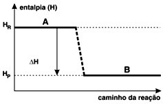

Termodinâmica química
(UFRRJ) Desde a pré-história, quando aprendeu a manipular o fogo para cozinhar seus alimentos e se aquecer, o homem vem percebendo sua dependência cada vez maior das várias formas de energia. A energia é importante para uso industrial e doméstico, nos transportes etc.
Existem reações químicas que ocorrem com liberação ou absorção de energia, sob a forma de calor, denominadas, respectivamente, como exotérmicas e endotérmicas. Observe o gráfico a seguir e assinale a alternativa correta:

a) O gráfico representa uma reação endotérmica.
b) O gráfico representa uma reação exotérmica.
c) A entalpia dos reagentes é igual à dos produtos.
d) A entalpia dos produtos é maior que a dos reagentes.
e) A variação de entalpia é maior que zero.
Alternativa B. Resolução:
O gráfico da questão é de uma reação exotérmica, já que a entalpia dos reagentes (Hr) apresenta maior valor que a entalpia dos produtos (Hp).